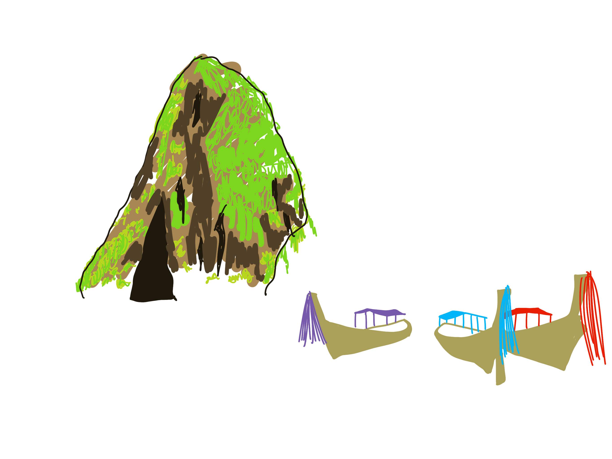
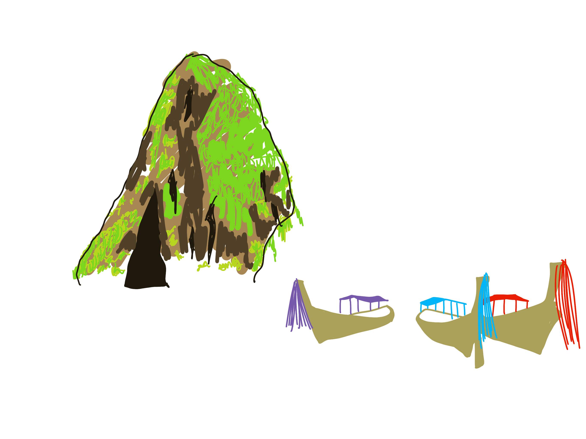

I love traveling and Thailand was on my bucket list for so long, especially Phuket. I wanted to experience the culture, learn about the food and history. I went to Phuket in January, 2019. I'm so glad I did before covid. I went to some amazing sanctuaries, ziplined in the jungle, swam in beautiful waters. I generally had the best time with my family and documented everything during the trip. Click here to see how my Phuket trip started